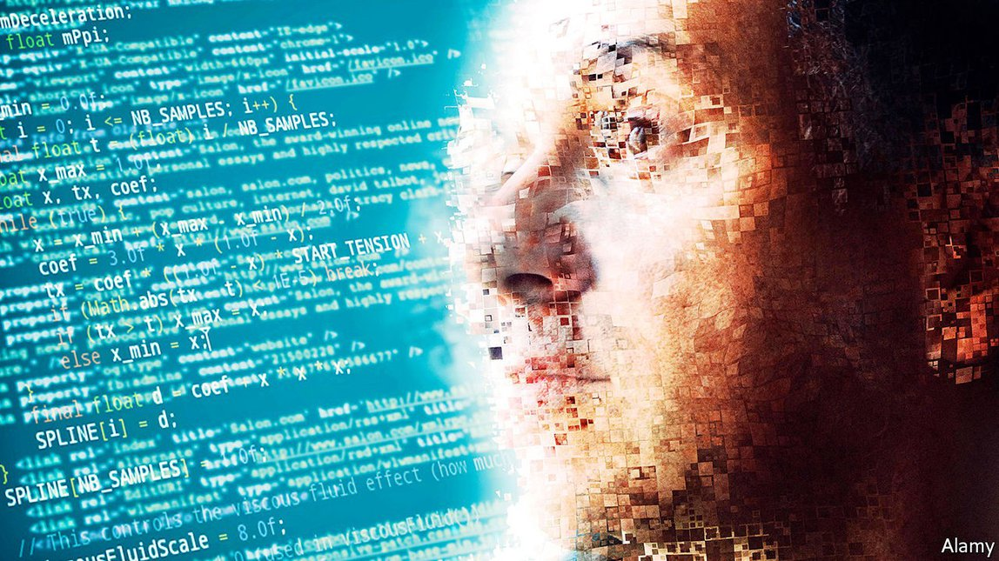

2020-12-27T09:33:34+00:00
2021年的世界
智能设计
传统经济模型无法捕捉人类行为的复杂性
各国政府在新冠疫情期间已深陷赤字，它们将在2021年努力恢复财政秩序。在2007至2009年的全球金融危机过后，富裕国家的政府过度勒紧了腰带，结果抑制了经济的复苏。这次它们会想在这个环节上变得更聪明些。有些政府还要更雄心勃勃，寻求重新设计自己的社会福利系统——疫情会让公众更愿意支持更强韧的社会安全网。贫穷国家的决策者会希望减轻贫困并维持住经济发展。
如何平衡所有这些目标？做个实验或许可以告诉你特定的工具是否有效，而关于基本收入的研究项目——比如慈善组织“直接捐款”（Give Directly）在肯尼亚开展的那种——得出的发现会影响政府的思路。但是，实验可能既不够广泛又不够及时，不足以帮助政府设定每年名目繁多的税收和补贴额度。传统的经济模型无法捕捉人类行为的复杂性：比如人们会随税率上升改变自己的行为，或者腐败的官员可能将部分公共资金中饱私囊。因此，在2021年，各地政府将跃跃欲试，要在决策过程中大举投入计算能力，用人工智能（AI）来模拟整体经济和新政策的效果。
“基于主体”模型（ABM）会模拟经济体中不同类型的参与者之间的长期相互影响来预测他们的行为：如果公务员贪污或纳税人逃税可以不受责罚，那么他们就会这么做。一些模型使用机器学习，通过海量数据来“训练”模型，模拟的行为真实得令人吃惊。由英国和墨西哥的研究人员开发、联合国开发计划署赞助的“政策优先顺位推断”项目（Policy Priority Inference）就使用了这种方法。它已经在墨西哥使用，将各种类别的政府开支计划输入模型，根据它对腐败、低效和溢出效应的模拟，计算出政府是否有可能实现其发展目标，以及应该在什么方面多花钱或少花钱。更多贫穷国家可能会看到这种方法的吸引力。
富裕国家的兴趣也可能被激发起来。软件公司Salesforce和哈佛大学的研究人员已经使用模拟实验表明，正如计算机可以学会下围棋并发展出人类可能想不到的步法战略，它们也可以提议官僚们不曾想到的、能最大化经济绩效的税收和支出混合方案。那为何不向AI要些新点子呢？
以上种种并不意味着经济学家或官员们会在2021年丢了工作。要诠释这类模型得出的结论需要专业知识。政客们不会放弃他们增税减税的权力。但是，在疫情之后热衷做实验的政策制定者和研究人员将有机会扩展他们的工具包了。
2020-12-27T09:33:34+00:00
The World in 2021
Intelligent design
Conventional economic models do not capture the complexity of human behaviour
HAVING GONE deep into the red during the covid-19 pandemic, governments will grapple in 2021 with getting their finances back in order. After the global financial crisis of 2007-09, those in rich countries tightened their belts too much, choking the economic recovery. This time they will want to be cleverer about it. Some will be more ambitious, seeking to redesign their welfare systems: the pandemic will strengthen public support for stronger social safety-nets. And policymakers in poor countries will want to alleviate poverty and sustain economic development.
How to balance all these aims? An experiment might tell you if a particular tool works, and findings from projects on basic income, such as that run in Kenya by Give Directly, a charity, will influence governments’ thinking. But experiments can be neither broad nor timely enough to help governments set a plethora of tax and subsidy rates every year. Conventional economic models do not capture the complexity of human behaviour: that people change what they do as tax rates rise, or that corrupt officials might pocket some public funds. So in 2021 governments will be tempted to throw computational power at their policymaking, using artificial intelligence (AI) to simulate the economy, and the effects of new policies.
“Agent-based” models simulate the behaviour of different types of participants in the economy by allowing them to respond to each other over time: if a public servant can get away with pocketing more money, or a taxpayer with paying less tax, then they will do so. Some simulate surprisingly realistic behaviour by using machine learning to “train” the model using vast sets of data. One such approach is Policy Priority Inference, developed by researchers in Britain and Mexico and sponsored by the UN’s development programme. Already used in Mexico, it takes governments’ spending plans across a range of categories and works out, based on its simulation of corruption, inefficiencies and spillovers, whether a government is likely to hit its development goals, and where more (or less) money should be spent. More poor countries could see the appeal of such an approach.
Interest in rich countries could be piqued, too. Researchers at Salesforce, a software company, and Harvard University have used simulations to show that, much as computers can learn to play Go and develop strategies that might not occur to humans, they can also suggest combinations of tax and spending that maximise economic performance, and which bureaucrats might not have dreamed up. So why not turn to AI for fresh ideas?
None of this means that economists or bureaucrats will find themselves out of work in 2021. Interpreting the models’ results requires expertise. Politicians will not cede their power to raise and lower tax rates. But policymakers and researchers keen to experiment in the aftermath of the pandemic will have an opportunity to expand their toolkits.
2020-12-27T09:33:34+00:00
2021年的世界
智能設計
傳統經濟模型無法捕捉人類行為的複雜性
各國政府在新冠疫情期間已深陷赤字，它們將在2021年努力恢復財政秩序。在2007至2009年的全球金融危機過後，富裕國家的政府過度勒緊了腰帶，結果抑制了經濟的復蘇。這次它們會想在這個環節上變得更聰明些。有些政府還要更雄心勃勃，尋求重新設計自己的社會福利系統——疫情會讓公眾更願意支持更強韌的社會安全網。貧窮國家的決策者會希望減輕貧困並維持住經濟發展。
如何平衡所有這些目標？做個實驗或許可以告訴你特定的工具是否有效，而關於基本收入的研究項目——比如慈善組織“直接捐款”（Give Directly）在肯尼亞開展的那種——得出的發現會影響政府的思路。但是，實驗可能既不夠廣泛又不夠及時，不足以幫助政府設定每年名目繁多的稅收和補貼額度。傳統的經濟模型無法捕捉人類行為的複雜性：比如人們會隨稅率上升改變自己的行為，或者腐敗的官員可能將部分公共資金中飽私囊。因此，在2021年，各地政府將躍躍欲試，要在決策過程中大舉投入計算能力，用人工智能（AI）來模擬整體經濟和新政策的效果。
“基於主體”模型（ABM）會模擬經濟體中不同類型的參與者之間的長期相互影響來預測他們的行為：如果公務員貪污或納稅人逃稅可以不受責罰，那麼他們就會這麼做。一些模型使用機器學習，通過海量數據來“訓練”模型，模擬的行為真實得令人吃驚。由英國和墨西哥的研究人員開發、聯合國開發計劃署贊助的“政策優先順位推斷”項目（Policy Priority Inference）就使用了這種方法。它已經在墨西哥使用，將各種類別的政府開支計劃輸入模型，根據它對腐敗、低效和溢出效應的模擬，計算出政府是否有可能實現其發展目標，以及應該在什麼方面多花錢或少花錢。更多貧窮國家可能會看到這種方法的吸引力。
富裕國家的興趣也可能被激發起來。軟件公司Salesforce和哈佛大學的研究人員已經使用模擬實驗表明，正如計算機可以學會下圍棋並發展出人類可能想不到的步法戰略，它們也可以提議官僚們不曾想到的、能最大化經濟績效的稅收和支出混合方案。那為何不向AI要些新點子呢？
以上種種並不意味着經濟學家或官員們會在2021年丟了工作。要詮釋這類模型得出的結論需要專業知識。政客們不會放棄他們增稅減稅的權力。但是，在疫情之後熱衷做實驗的政策制定者和研究人員將有機會擴展他們的工具包了。